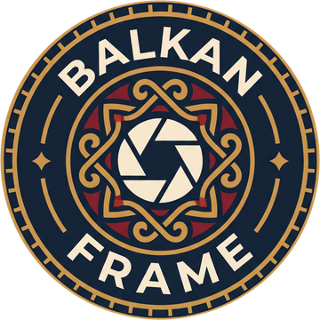

One frame.
Eleven film industries.
The one-stop guide to making films in the Balkans.
11countries
0film funds & centres
0festivals
0people
Explore
Every topic has its own page.
Classic of the day
A different Balkan film from 1905–1999 every day. History & where to watch →
Coming up
The next deadlines and events.
Full calendar →